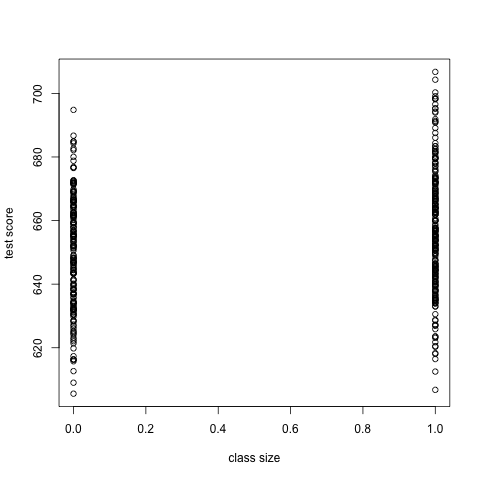
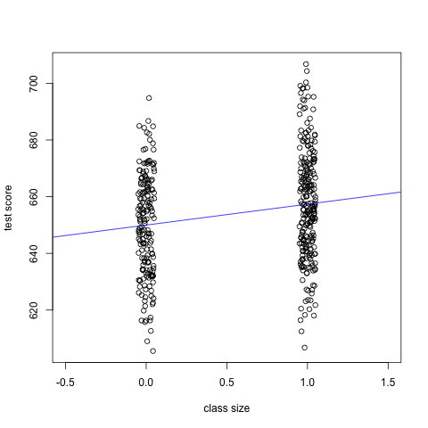

Replication of Examples in Chapter 5
1 Introduction
In this document, I will show you how to perform hypothesis testing for a single coefficient in a simple linear regression model. I will do this through replicating the examples that appear in Chapter 5.
2 The OLS estimation
The linear model is
\begin{equation} \label{eq:testscr-str-1} TestScore_i = \beta_0 + \beta_1 STR_i + u_i \end{equation}
We first read data from the Stata file, caschool.dta, into R.
library(AER) library(foreign) classdata <- read.dta("caschool.dta")
Then, we estimate the linear regression model with the function lm()
and get the estimation results using the function summary().
df2use <- classdata[c("testscr", "str")] mod1 <- lm(testscr ~ str, data = df2use) summary(mod1)
Call:
lm(formula = testscr ~ str, data = df2use)
Residuals:
Min 1Q Median 3Q Max
-47.727 -14.251 0.483 12.822 48.540
Coefficients:
Estimate Std. Error t value Pr(>|t|)
(Intercept) 698.9330 9.4675 73.825 < 2e-16 ***
str -2.2798 0.4798 -4.751 2.78e-06 ***
---
Signif. codes: 0 ‘***’ 0.001 ‘**’ 0.01 ‘*’ 0.05 ‘.’ 0.1 ‘ ’ 1
Residual standard error: 18.58 on 418 degrees of freedom
Multiple R-squared: 0.05124, Adjusted R-squared: 0.04897
F-statistic: 22.58 on 1 and 418 DF, p-value: 2.783e-06
The estimation results reported by summary(mod1) include the
estimated coefficients, their standard errors, t-statistics, and the
p-values. There are other statistics that we will learn in the next
two lectures.
By default, the standard errors reported are computed using the formula of the homoskedasticity-only standard errors, which are then used to compute the t-statistics. And the p-values are based on the Student's t distribution with 418 degrees of freedom.
3 Hypothesis tests
Now we get into testing the hypothesis regarding \(\beta_1\), that is, \[ H_0: \beta_1 = \beta_{1,0} \text{ vs. } H_1: \beta_1 \neq \beta_{1,0} \]
In this example, we are testing the null hypothesis \(H_0: \beta_1 = 0\).
Compute the t-statistic
We compute the t-statistic based on the following formula,
\begin{equation} \label{eq:t-stat-b1} t = \frac{\hat{\beta}_1 - \beta_{1,0}}{SE(\hat{\beta}_1)} \end{equation}Upon computing the t-statistic, we compare it with the critical value at the desired significant level, say 5%, which is 1.96 for a two-sided test with the standard normal distribution. Also, we can use the t-statistic to get the p-value.
How can we get all the quantities used in this formula? Of course, you
can simply copy them from the output of summary(mod1). But doing so
is cumbersome and prone to mistakes. More importantly, we should use
the heteroskedasticity-robust standard error of \(\hat{\beta}_1\)
instead of the ones reported by default.
Next, I will show you two ways to get the t-statistics using the
heteroskedasticity-robust standard errors. The first way is to get all
the quantities in Equation (\ref{eq:t-stat-b1}) using R
functions, and the second way is to get the appropriate t-statistic
through the function coeftest(). Although the second method is much
easier than the first one, we can learn how to obtain all the elements
in the output of the function lm().
Get all elements from an lm object
The coefficients
The output of the function lm() is an lm object that has the same
structure as a list object.
class(mod1)
str(mod1, max.level=1, give.attr = FALSE)
[1] "lm" List of 12 $ coefficients : Named num [1:2] 698.93 -2.28 $ residuals : Named num [1:420] 32.7 11.3 -12.7 -11.7 -15.5 ... $ effects : Named num [1:420] -13406.2 88.3 -14 -12.6 -16.8 ... $ rank : int 2 $ fitted.values: Named num [1:420] 658 650 656 659 656 ... $ assign : int [1:2] 0 1 $ qr :List of 5 $ df.residual : int 418 $ xlevels : Named list() $ call : language lm(formula = testscr ~ str, data = df2use) $ terms :Classes 'terms', 'formula' language testscr ~ str $ model :'data.frame': 420 obs. of 2 variables:
From an lm() object, all estimated coefficients can be extracted
using the function coef(), which returns a vector containing all
estimated coefficients. By default, the first element in the vector is
the estimated intercept, and the slope is the second.
b <- coef(mod1)
b
(Intercept) str 698.932952 -2.279808
b1 <- b[2]
The standard errors
The homoskedasticity-only standard errors are reported in the output of
summary()by default in R. They can also be extracted with the function,vcov(), which returns a matrix called the covariance matrix, with the diagonal elements representing the variances of the estimated coefficients. Thus, the standard errors are the square roots of the diagonal elements.V <- vcov(mod1) se_b1 <- sqrt(V[2, 2]); se_b1
[1] 0.4798256
The heteroskedasticity-robust standard errors are the square roots of the diagonal elements in the heteroskedasticity-consistent covariance matrix, obtained using the function of
vcovHC()in thesandwichpackage that is loaded by default. There are several versions of the heteroskedasticity-consistent covariance matrix. What we use is the type ofHC1.htV <- vcovHC(mod1, type = "HC1") se_b1_rb <- sqrt(htV[2, 2]); se_b1_rb
[1] 0.5194892
The t-statistic, the critical value, and the p-value
The t-statistics using the heteroskedasticity-robust standard error is then computed by
(t_b1_rb <- b1 / se_b1_rb)
str
-4.388557
Although we know the critical value at the 5% significant level for a
two-sided test is 1.96 with a large sample, we prefer getting the
value from a function in R. The critical value at the 5% significance
level is in fact the 97.5th percentile of the standard normal
distribution, which can be obtained from the qnorm() function.
(c.5 <- qnorm(0.975))
[1] 1.959964
The p-value associated with the actual t-statistics is
\(\mathrm{Pr}\left(|t| > |t^{act}| \right) = 2 \Phi(-|t^{act}|)\). We can
compute the p-value in R, following this definition and using the
pnorm() function.
(pval <- 2 * pnorm(-abs(t_b1_rb)))
str
1.141051e-05
Use coeftest()
Since hypothesis testing is a very common work in statistics, many R
functions have been developed to do it. Here I introduce a function,
coeftest(), which is in the package of lmtest loaded automatically
through loading the AER package.
coeftest(mod1)
t test of coefficients:
Estimate Std. Error t value Pr(>|t|)
(Intercept) 698.93295 9.46749 73.8245 < 2.2e-16 ***
str -2.27981 0.47983 -4.7513 2.783e-06 ***
---
Signif. codes: 0 ‘***’ 0.001 ‘**’ 0.01 ‘*’ 0.05 ‘.’ 0.1 ‘ ’ 1
By default, it reports the homoskedasticity-only standard errors,
the corresponding t-statistics, and the p-values. To get the
heteroskedasticity-robust results, we need to add an argument to this
function to specify the heteroskedasticity-consistent covariance
matrix, which has been defined above as htV <- vcovHC(mod1, type = "HC1").
# coeftest returns a matrix t_tst <- coeftest(mod1, vcov. = htV); t_tst
t test of coefficients:
Estimate Std. Error t value Pr(>|t|)
(Intercept) 698.93295 10.36436 67.4362 < 2.2e-16 ***
str -2.27981 0.51949 -4.3886 1.447e-05 ***
---
Signif. codes: 0 ‘***’ 0.001 ‘**’ 0.01 ‘*’ 0.05 ‘.’ 0.1 ‘ ’ 1
## Get the t-statistic for STR t_b1 <- t_tst["str", "t value"]; t_b1
[1] -4.388557
Confidence interval
Finally, we can construct the 95% confidence interval of \(\beta_1\)
using the function of confint(), which uses the
homoskedasticity-only standard errors.
# confidence interval with the default homoskedasticity-only SE confint(mod1, "str")
2.5 % 97.5 %
str -3.22298 -1.336637
Since there is no existing function to report the confidence interval with heteroskedasticity-robust SE, we can write a user-defined function to do that.
get_confint_rb <- function(lm_obj, param, vcov_ = vcov(lm_obj), level = 0.05){ ## This function generates a two-sided confidence interval for a ## parameter in the linear regression model with a specified ## covariance matrix. The inputs The output ## get all the parameters' names and select one based on param all_param <- names(coef(lm_obj)) which_param <- grep(param, all_param) ## get the estimated parameter and its standard error bhat_param <- coef(lm_obj)[which_param] sd_param <- sqrt(vcov_[which_param, which_param]) ## get the critical value cv <- qnorm(1 - level/2) ## calculate the confidence interval lower <- bhat_param - cv * sd_param upper <- bhat_param + cv * sd_param conf_interval <- c(lower, upper) names(conf_interval) <- c("lower", "upper") return(conf_interval) }
Note that we define the default value of vcov_ to be the
homoskedasticity-only covariance matrix in the function
get_confint_rb(), and the default significant level is 5%. When
computing the confidence interval with the heteroskedasticity-robust
standard errors, we need to change vcov_ to a
heteroskedasticity-consistent covariance matrix, which is htV.
get_confint_rb(mod1, param = "str", vcov = htV)
lower upper
-3.297988 -1.261628
4 Dummy variable
Create a dummy variable
We define a dummy variable representing small classes.
\begin{equation*} D_i = \begin{cases} 1,\; &\text{ if } str < 20 \\ 0,\; &\text{ if } str \geq 20 \end{cases} \end{equation*}smallclass <- ifelse(df2use$str < 20, 1, 0)
The function ifelse() creates a vector consisting of 1 and 0. The
first argument in this function is a condition, df2use$str < 20. If the
condition is satisfied for an element in df2use$str, the corresponding
element in D is 1, otherwise 0.
Regression with a dummy variable
Then we can estimate the linear regression of test scores against the dummy variable, and do the zero hypothesis test.
mod2 <- lm(testscr ~ smallclass, data = df2use) coeftest(mod2, vcov. = vcovHC(mod2, type = "HC1"))
t test of coefficients:
Estimate Std. Error t value Pr(>|t|)
(Intercept) 649.9788 1.3229 491.3317 < 2.2e-16 ***
smallclass 7.3724 1.8236 4.0428 6.288e-05 ***
---
Signif. codes: 0 ‘***’ 0.001 ‘**’ 0.01 ‘*’ 0.05 ‘.’ 0.1 ‘ ’ 1
Create a scatterplot
We can create a scatterplot to visualize the relationship between test scores and the dummy variable.
plot(smallclass, df2use$testscr,
xlab = "class size", ylab = "test score")

Figure 1: The scatterplot without jittering
In Figure 1, since the variable smallclass takes only
the value of 1 or 0, many points are overlapped. To make these points
more visible, we can create a scatterplot with jittered points. I also
adjust the limit of x-axis so that the clusters of points appear close
towards the center of the plot.
smallclass_jittered <- jitter(smallclass, amount = 0.05) plot(smallclass_jittered, df2use$testscr, xlim = c(-0.5, 1.5), xlab = "class size", ylab = "test score") abline(coef(mod2)[1], coef(mod2)[2], col = "blue")

Figure 2: The scatterplot with jittering